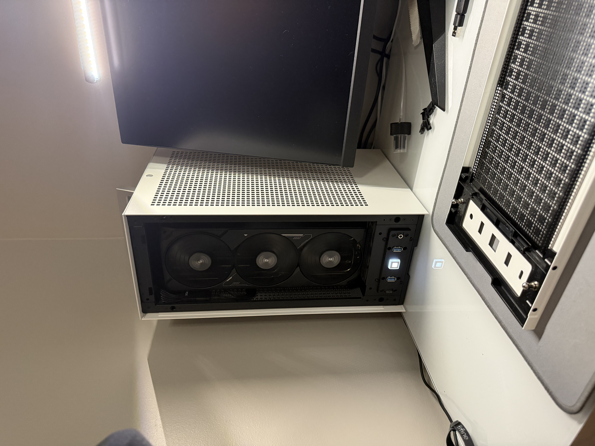

My Projects
Thank you for checking out my projects! Currently I am working on quite a bit of projects at the moment. I will update this page when I have completed more IT related projects. For now, I will show you my accomplishments outside of coding subjects.
Gaming Computer Build
Last year I started building my own computer. At first I wanted to make a small form factor ITX build. I wanted to challenge myself to not only make sure all my parts worked together in a small space, but also ensuring that I will get the full use out of my components for the years to come.

My current specs are:
3D Printer Enclosure and Lighting
Currently I am using my 3D printer for hobby purposes and I like being able to remotely view the project I am printing when I am away from home. Currently I can only see whats printing when the overhead light in the room is on and it's not perfect as the image is quite dim. In addition to this, a printing encloser ensures that dust does not enter the printing area and that toxic fumes and heat does not escape while printing in specific filaments.
3D Print Time-lapse
Time-lapse of my most current print